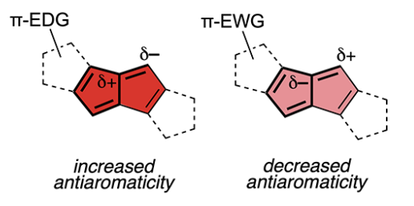
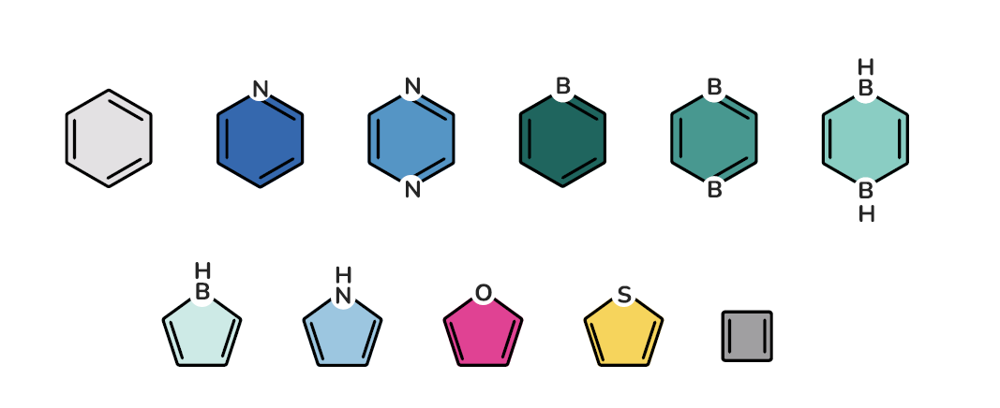
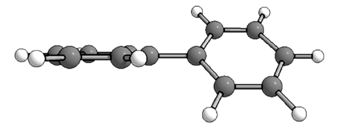
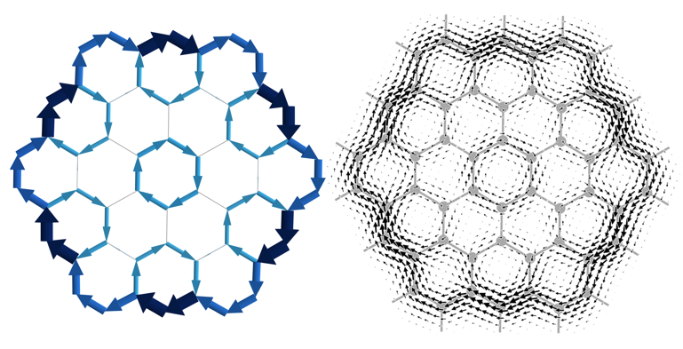
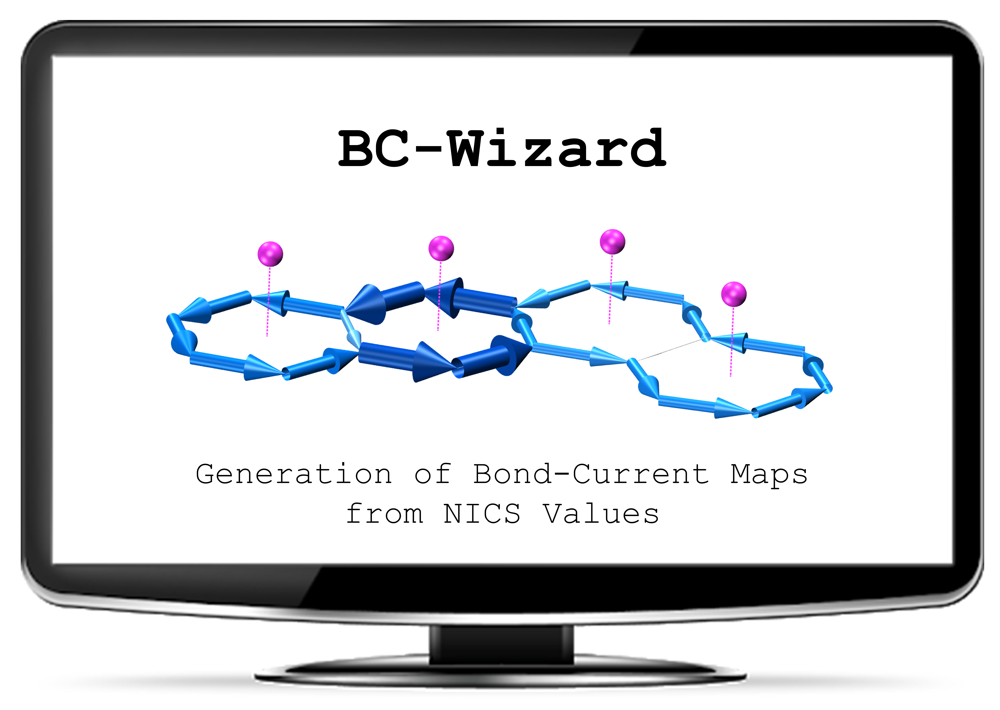
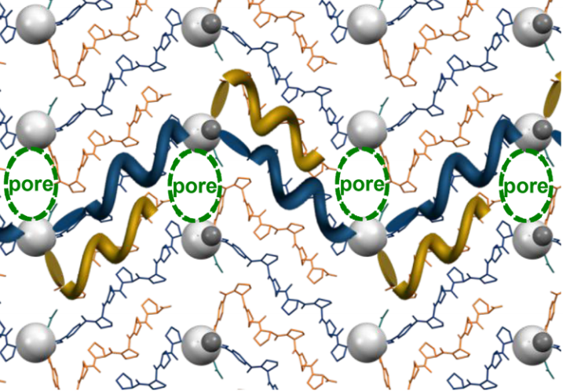

Hetero-Polycyclic Aromatic Systems: A Data-Driven Investigation of Structure–Property Relationships
PreprintAlexandra Wahab and Renana Gershoni-Poranne*
Beilstein Journal of Organic Chemistry, July 2024
COMPAS-3: a Dataset of peri-Condensed Polybenzenoid Hydrocarbons
PreprintAlexandra Wahab and Renana Gershoni-Poranne*
Physical Chemistry Chemical Physics, May 2024

Organic Letters, January 2024
Modulating Paratropicity in Heteroarene-Fused Expanded Pentalenes
Said Jalife, Alexandra Tsybizova, Renana Gershoni-Poranne*, and Judy I. Wu*Organic Letters, January 2024

Scientific Data, January 2024
COMPAS-2: a Dataset of Cata-Condensed Hetero-Polycyclic Aromatic Systems
PreprintScientific Data, January 2024

Journal of Physical Chemistry Letters, December 2023
Light-Triggered Enhancement of Fluorescence Efficiency in Organic Cages
Journal of Physical Chemistry Letters, December 2023
Repercussions of Multi-Electron Uptake by a Twistacene: a Reduction-Induced Double Dehydrogenative Annulation
Organic Chemistry Frontiers, September 2023

Angewandte Chemie, May 2023
A Crowning Achievement: The First Solution-Phase Synthesis of Circumcoronenes
Angewandte Chemie, May 2023
Interplay of Charge and Aromaticity Upon Chemical Reduction of p-Quinquephenyl with Alkali Metals
Organometallics, February 2023

Interpretable Deep-Learning Unveils Structure-Property Relationships in Polybenzenoid Hydrocarbons
PreprintThe Journal of Organic Chemistry, December 2022
Text-based representations with interpretable machine learning reveal structure–property relationships of polybenzenoid hydrocarbons
PreprintThe Journal of Physical Organic Chemistry, December 2022
The COMPAS Project: A Computational Database of Polycyclic Aromatic Systems. Phase 1: cata-Condensed Polybenzenoid Hydrocarbons
PreprintJournal of Chemical Information and Modeling, July 2022

Localized Antiaromaticity Hot-spot Drives Reductive Dehydrogenative Cyclizations in Bis- and Mono-Helicenes
PreprintJournal of the American Chemical Society, June 2022

Phys. Chem. Chem. Phys., January 2022
Highlighted in Chemistry World.
Simple and Efficient Visualization of Aromaticity: Bond Currents Calculated from NICS Values
Phys. Chem. Chem. Phys., January 2022
Highlighted in Chemistry World.

Extensive Redox Non-Innocence in Iron Bipyridine-Diimine Complexes: a Combined Spectroscopic and Computational Study
Inorganic Chemistry, November 2021

Tuning Magnetic Interactions Between Triphenylene Radicals by Variation of Crystal Packing in Structures with Alkali Metal Counterions
Inorganic Chemistry, September 2021
Chapter 4: NICS — Nucleus Independent Chemical Shift
PreprintAromaticity: Modern Computational Methods and Applications, May 2021
Edited by: Israel Fernandez
Published by: Elsevier

Prediction of Spin Density, Baird‐Antiaromaticity, and Singlet‐Triplet Energy Gap in Triplet‐State Polybenzenoid Systems from Simple Structural Motifs
Chemistry - A European Journal, January 2021
Predicting bond-currents in polybenzenoid hydrocarbons with an additivity scheme
The Journal of Chemical Physics, January 2021
Invited contribution for the

Journal of the American Chemical Society, January 2021
Peptide–Metal Frameworks with Metal Strings Guided by Dispersion Interactions
Journal of the American Chemical Society, January 2021

Predi-XY: A Python program for automated generation of NICS-XY-Scans based on an Additivity Scheme
Electronic Structure, December 2020
Invited contribution for the
Ring-fused cyclobutanes via cycloisomerization of alkylidenecyclopropane acylsilanes
Chemical Science, May 2020
Supramolecular Modulation of Hybrid Perovskite Solar Cells via Bifunctional Halogen Bonding Revealed by Two-Dimensional 19F Solid-State NMR Spectroscopy
Journal of the American Chemical Society, January 2020
Mechanistic Studies on the Nickel-Catalyzed Cyclopropanation with Lithiomethyltrimethylammonium Triflate
Organometallics, May 2019
Light-Responsive Pyrazine-Based Systems: Probing Aromatic Diarylethene Photocyclization
Journal of Physical Chemistry C, August 2018

The Predictive Power of Aromaticity: Quantitative Correlation between Aromaticity and Ionization Potentials and HOMO-LUMO Gaps in Oligomers of Benzene, Pyrrole, Furan, and Thiophene
Physical Chemistry Chemical Physics, May 2018
Piecing it Together: An Additivity Scheme for Aromaticity using NICS-XY-Scans
Chemistry - A European Journal, January 2018

Reponse to “Covalent Bonding and Charge Shift Bonds: Comment on ‘The Carbon–Nitrogen Bonds in Ammonium Compounds Are Charge Shift Bonds’
Chemistry - A European Journal, December 2017

The Carbon–Nitrogen Bonds in Ammonium Compounds Are Charge Shift Bonds
Chemistry - A European Journal, March 2017
Tetraazaacenes Containing Four-Membered Rings in Different Oxidation States. Are They Aromatic? A Computational Study
The Journal of Organic Chemistry, November 2014

The NICS-XY-Scan: Identification of Local and Global Ring Currents in Multi-Ring Systems
Chemistry - A European Journal, March 2014
Concurrence between Current Density, Nucleus-Independent Chemical Shifts, and Aromatic Stabilization Energy: The Case of Isomeric [4]- and [5]Phenylenes
The Journal of Organic Chemistry, July 2013